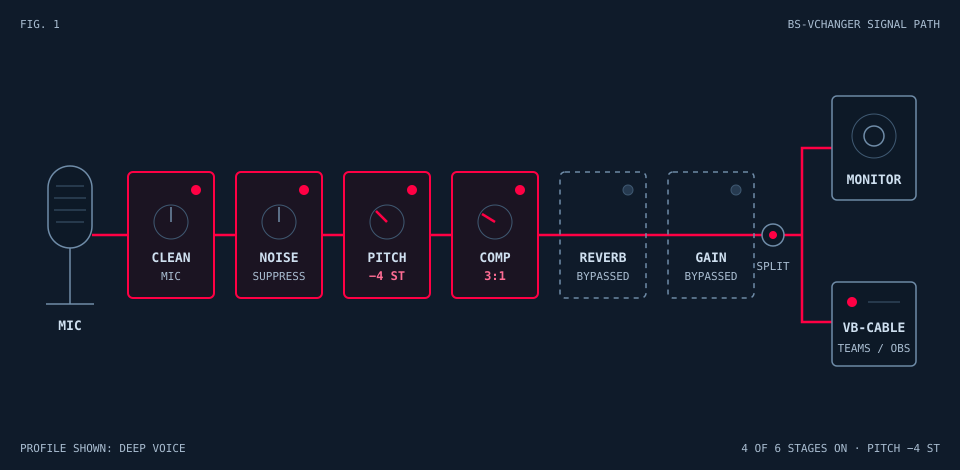

Personal software projects
Small apps.
Built right.
Desktop tools and web apps for gaming and content creation.

Apps
Unofficial score tracker for Carcassonne. Supports 2–6 players, full scoring rules including Cathedral and Inn expansions, a dice roller, undo, and persistent game state. Installable on iOS, Android, and desktop — works offline.
Real-time voice changer with 27 built-in profiles and 17 DSP effects, including RNNoise-based noise suppression, pitch shifting, and reverb. Routes processed audio to speakers/headphones and to VB-CABLE for use in Teams, Discord, Zoom, or OBS. Ships as a single ~5 MB standalone EXE — no installer.
Piping-fast Windows system monitor with a GPU-accelerated egui UI. Tracks CPU, memory, GPU, network, disk, temperature, and foreground app FPS with live sparklines, session peaks, and animated warn/crit thresholds in a frameless custom-chrome window.
Crops horizontal Fortnite gameplay clips to 9:16 vertical format using ffmpeg and uploads them to TikTok automatically via the Content Posting API. Built with Rust and egui; OAuth 2.0 with PKCE handles TikTok authentication.